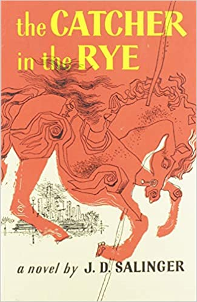
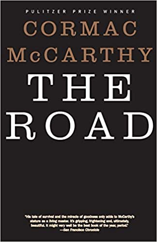
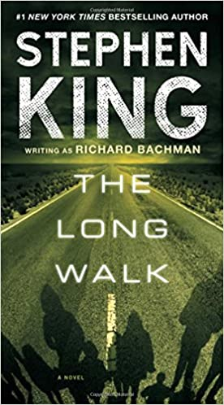
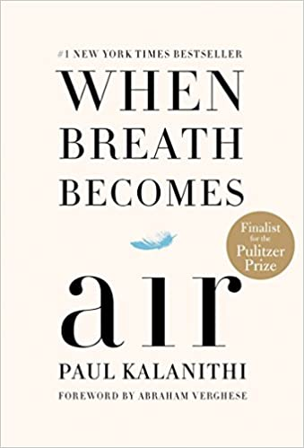
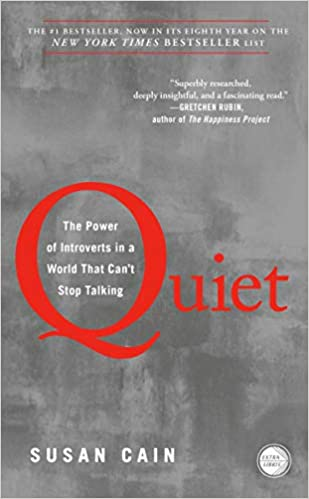

Through circumstances that tend to preclude adult, secondhand description, he leaves his prep school in Pennsylvania and goes underground in New York City for three days. The boy himself is at once too simple and too complex for us to make any final comment about him or his story.
Get the Book here!

A father and his son walk alone through burned America. Nothing moves in the ravaged landscape save ash on wind. It's cold enough to crack stones. Their destination is the coast. They have nothing; just a pistol to defend themselves against the lawless bands that stalk the road and each other.
Get the Book here!

#1 national bestseller. “I give my congratulations to the winner among your number, and my acknowledgements of valor to the losers.”Against the wishes of his mother, sixteen-year-old Ray Garraty is about to compete in the annual grueling match of stamina and wits known as The Long Walk.
Get the Book here!

What makes life worth living in face of death? What do when future, no longer a ladder toward your goals in life, flattens out into perpetual-present? to nurture new life as another fades away? These are questions Kalanithi wrestles in profoundly moving, exquisitely observed memoir.
Get the Book here!
“An amazing story, and truly inspiring. It’s even better than you’ve heard. Beautiful and propulsive Despite the singularity of childhood, the questions her book poses are universal: How much of ourselves should we give to those we love? And how much must we betray them to grow up?”
Get the Book here!

"A smart, lively book about the value of silence, solitude.” Susan Cain argues that we dramatically undervalue introverts, shows how much we lose in doing so. She charts rise of the Extrovert Ideal throughout twentieth century, explores how deeply it has come to permeate our culture.
Get the Book here!

In boyhood, Louis Zamperini was an incorrigible delinquent. As a teenager, he channeled his defiance into running, discovering prodigious talent that carried him Berlin Olympics. Then with start of World War II, athlete became an airman.
Get the Book here!
The two years before he wrote Crime and Punishment (1866) had been bad ones for Dostoyevsky. His wife and brother had died.Drawing upon experiences from his own prison days.author recounts in feverish, compelling tones the story of Raskolnikov.a pawnbroker whom he regards as "stupid, ailing, greedy…good for nothing."
Get the Book here!